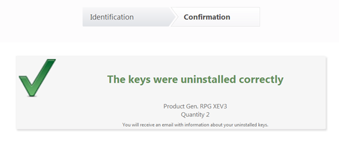

Authorization and uninstallation of GeneXus licences
Autorização e desinstalação de licenças GeneXus - Português Autorización y desinstalación de licencias GeneXus - Español
Authorization of GeneXus products
Select products to be authorized
This process explains how to authorize GeneXus on a computer where GeneXus is installed for the first time, and there are no previous installations active.
Upon opening your version of GeneXus, if you do not have any active licenses you will be asked to make the corresponding request.
You must select “Request Authorization” and then select the products you wish to authorize:
And finally, you will have to indicate that you wish to make the request online.
Another way to make the request is through the GeneXus License Manager, located in the GeneXus menu in Programs. You could also execute GxLMgr.exe from the directory where GeneXus is installed, and once there click the Select Computer button and select either Local License or Remote License. If you select Remote License a dialog will appear for you to enter the IP address of the remote server.
Note: the Remote License option may only be selected when GeneXus Protection Server was previously installed in the computer that will be acting as license server.
Then, click the Authorize button, select the Request Licenses option to select the components you want to authorize (what you have purchased), and then click on Next.
Select one of the two methods available to request licenses:
- Authorize Online: In this case, the request for licenses is done through the internet. To close the request, you must complete the data required on the web form that will be displayed.
- Generate Authorization File: This option is to be used only when you do not have an internet connection on your PC. This option generates a file that contains your licenses’ Site Codes. Follow the steps indicated in the Wizard, and then send the generated file to your distributor, indicating the company for which the request is being made, the GeneXus account to which they should be assigned (this user must be the company’s contact), and the options desired:
- Activate the product that is not activated.
- Add time to the installation.
- Add a number of licenses.
If you selected Authorize Online, a screen will open up where you will have to select the products you wish to authorize:
Once the products have been selected, click on Finish.
Fill out request information
After selecting the products you will be redirected to a web page to fill out your request’s data. But before that, you must log on indicating your GeneXus account (user or Email) and password.
Once you are logged on the site, the next step is to indicate:
- The e-mail box where you want the authorization key to be sent
- The company for which you are the contact
After entering the ID data click on the Accept button.
In the following screen you will see data on the request, where you may introduce any changes deemed necessary.
It could happen that you do not have a permit to request licenses. In such case, you may make the request but you will need your company’s contacts Administrator to authorize your request.
In case you do have permits to make request, then the reply could be immediate or it might depend on the approval of your distributor.
The possible changes you may introduce in the request are:
- Remove products you do not wish to activate from the request
- The type of action you want to exercise with the license:
- Request a full authorization
- Add users to the existing installation
- Change the activation period of your licenses
The activation period of a product (restriction) may be:
- Limited to a given number of days
- Unlimited, with the product active indefinitely, with no number of days defined
As you introduce changes to the product, the system will indicate whether the request is accepted immediately or if it depends on the approval by an operator.

In case you encounter indications on certain products, you may:
- Modify the request so that it matches the features of your product (for example: reduce the number of licenses or adjust the number of days, etc.)
- Eliminate the product so that it will not be processed. This will enable you to continue processing the remaining products.
- Maintain the request for the product, where you will have to explain clearly the reasons for requesting product(s) with error.
After entering the request’s information and the comments necessary, press the “Accept” button.
If the request may be processed immediately, in the following screen you will be able to download the activation of the products you requested. The activation will also be sent to the electronic mailbox you indicated in the identification step.
The products that could not be processed immediately due to administrative reasons will be sent to Artech for further processing.
Activate product
When you download, or receive by e-mail, the file with .gxa extension, copy it to disk and execute the GeneXus License Manager again.
Click on the Authorize button and select the Enter Licenses option. Then click on Next:
Select the Authorize from file option and find the .gxa file you saved previously.
Authorization of new versions of GeneXus products
To change the version you must uninstall the authorized licenses (refer to “Uninstallation of GeneXus products”) and then go through the authorization process for the new version (refer to “Authorization of GeneXus products” in this document).
Uninstallation of GeneXus products
The license uninstallation process depends on the version of the product that you have installed. So, here we describe the two possible options.
Uninstallation by e-mail
This process explains how to uninstall a license of a GeneXus product by e-mail.
Follow these steps to uninstall a GeneXus license:
- Execute the GeneXus License Manager located in the GeneXus menu in Programs. You may also execute GxLMgr.exe from the directory where GeneXus is installed.
- From the list of products displayed, select the product you want to uninstall and press the Uninstall button.

- In the new window displayed, indicate, in the “Copies to Uninstall” field, the number of licenses to uninstall and then press the “OK” button.
- Copy the uninstallation code from the new window and send it by e-mail to your distributor indicating also your company’s name, the product and the version of the uninstallation.
Uninstallation through the Web
The latest versions of GeneXus allow their uninstallation through the web. In these cases, the process is as follows:
- Execute the GeneXus License Manager located in the GeneXus menu in Programs. You may also execute GxMgr.exe from the directory where GeneXus is installed.
- From the list of products displayed, select the product to be uninstalled and press the Uninstall button.
- In the new window displayed, indicate, in the “Copies to Uninstall” field, the number of licenses to be uninstalled and then press the OK button.
- If you have an internet connection you will immediately be redirected to a web page to fill out data on your uninstallation. Prior to this, you must log on indicating your GeneXus account (user or Email and password).
 - After the login you will be able to view data about the uninstallation you just did.
If you do not have an internet connection, or if you could not perform the process as indicated above, then you should e-mail your distributor with the most recent file with name Key_codigo.gxa, which is in the directory where GeneXus is installed. The file’s location will be indicated at the time of uninstallation.
States shown in the GeneXus License Manager window for each product
In the GeneXus License Manager window, the protection status is shown for each of the products. These might be:
| Authorized | Correctly authorized. |
| Not authorized | Not authorized. |
| Uninstalled | Not installed. |
| Error | Protection failure. It can be shown when you go over the deadline (<1999 or> 2126). |
| Suspended, data changed | Protection suspended, a backward change has been made to the date of the machine. |
| Time Runout | The authorized period of days to run has expired. |
| Runs Runout | The number of authorized runs has ended. |
| Suspended, authorization data changed | Suspended, the license information could not be read correctly. |